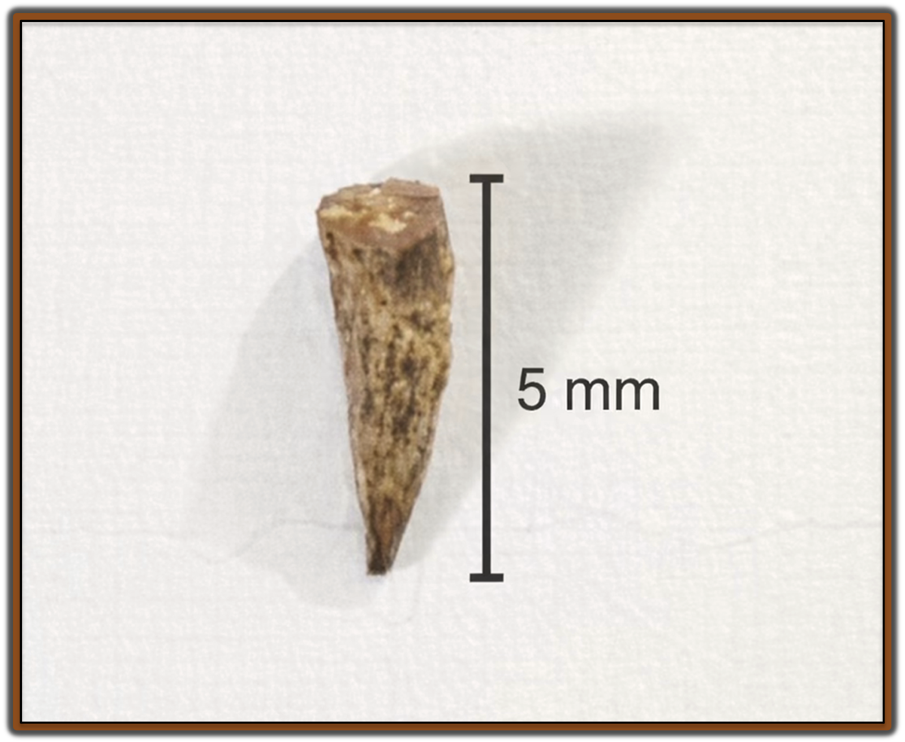
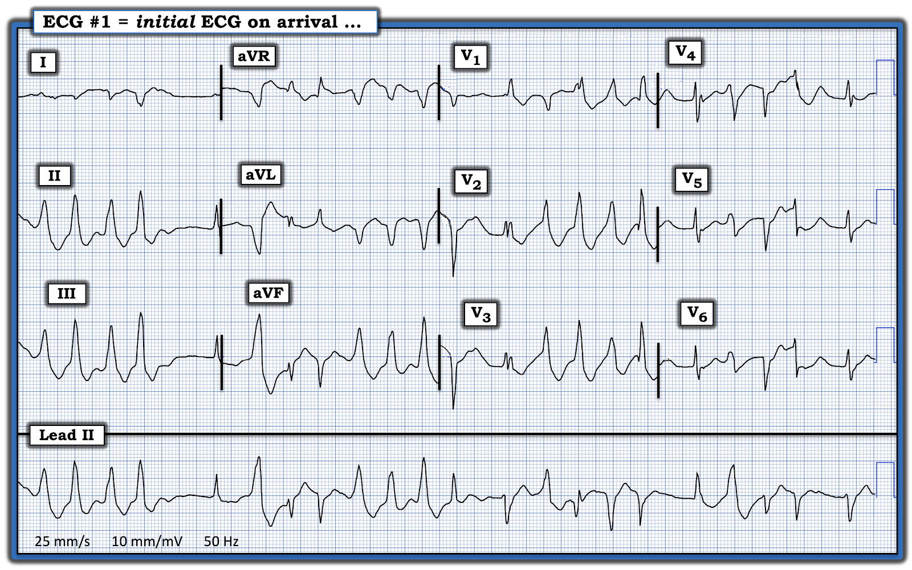
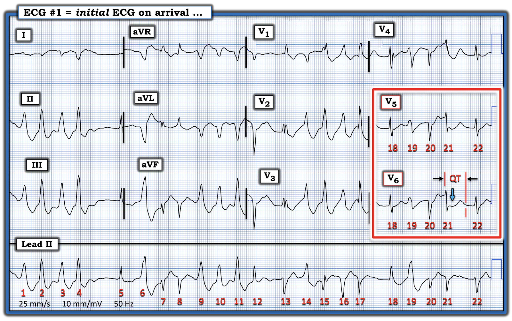
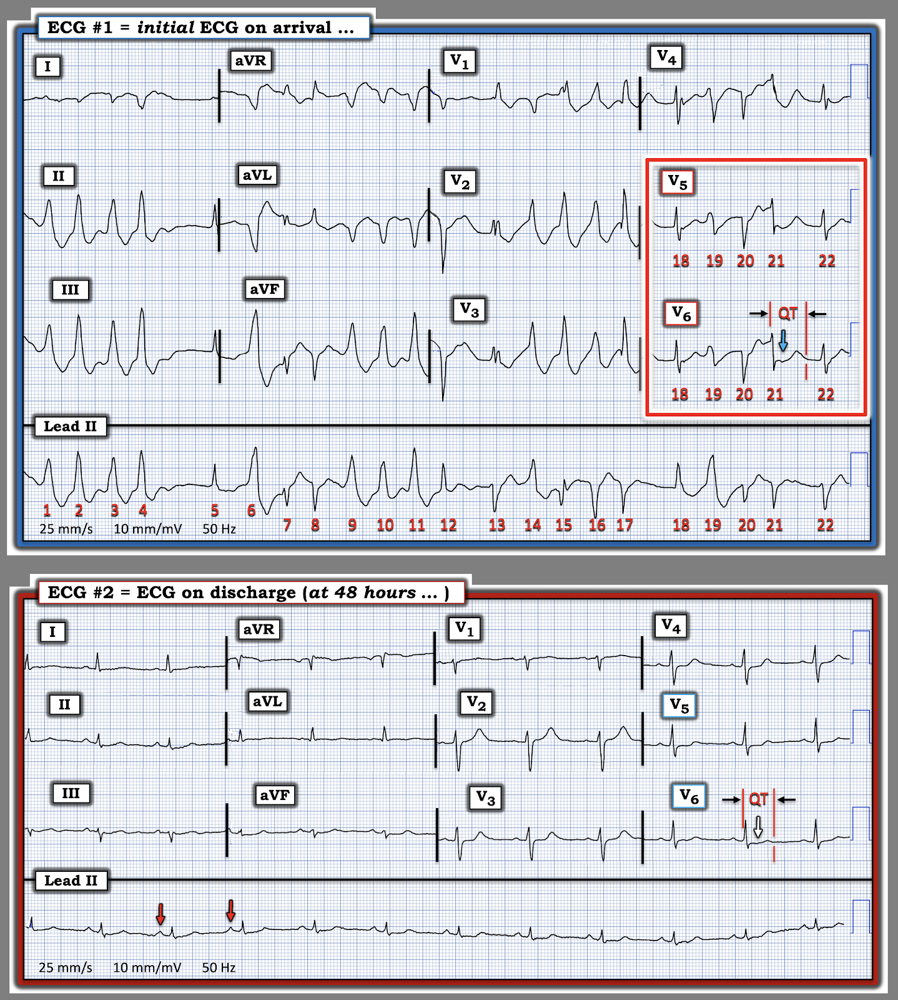

ECG Blog #524 — Một chút Jadwar...
==================================
LƯU Ý: Bài hôm nay được lấy từ công trình của chúng tôi đăng trên JACC Case Reports —
(Nirdosh Rassani, MBBS & Ken Grauer, MD — tháng Một, 2026) (https://www.jacc.org/doi/10.1016/j.jaccas.2026.107164)
==================================
Bệnh nhân trong ca hôm nay là một nam giới ở cuối độ tuổi 20 — đến khoa cấp cứu (ED) khoảng 6 giờ sau khi nuốt một mẩu Jadwar to bằng bề ngang một ngón tay (Hình 1).


Chi tiết của ca hôm nay có trong bài báo của chúng tôi trên JACC Case Reports (xem tại đường link ở trên).
- Chỉ cần nói rằng triệu chứng của bệnh nhân lúc nhập viện chỉ gồm đỏ bừng mặt nhẹ, tăng tiết mồ hôi và hồi hộp đánh trống ngực.
- Bệnh nhân tỉnh táo — với dấu hiệu sinh tồn ổn định.
Nhìn vào điện tâm đồ ban đầu (tôi đã đưa lại ở Hình 2) của bệnh nhân này — dễ hiểu vì sao lý do chính khiến anh đến khám là "hồi hộp đánh trống ngực".
CÂU HỎI:
- Bạn sẽ diễn giải điện tâm đồ ban đầu này như thế nào?


SUY NGHĨ CỦA TÔI về điện tâm đồ ở Hình 2:
Điện tâm đồ ban đầu của bệnh nhân này cực kỳ đáng lo ngại. Đó là vì hình dạng QRS thay đổi liên tục. Thật khó mà biết có nhát nào "bình thường" hay không.
- Để dễ đánh giá, ở Hình 3 — tôi đã đánh số các nhát trên dải nhịp chuyển đạo II dài.
- Bạn có biết chuyện gì đang xảy ra không? (Xem bên dưới).


= = = = = = = = = = = = = = = = = = = = =
Dải nhịp chuyển đạo II dài:
Đây là một dải nhịp phức tạp. Tôi trình bày dưới đây "quá trình tư duy" từng bước của mình khi đánh giá:
- Nhịp không đều hoàn toàn.
- Như đã nói — hình dạng QRS thay đổi liên tục trên suốt dải nhịp chuyển đạo II dài. Nhiều nhát có QRS rộng.
- Có một số nhát QRS hẹp. Ba trong số các nhát hẹp này trông giống nhau và dương ở chuyển đạo II dài (tức là các nhát #5,12,18). Có lẽ 3 nhát này là nhát trên thất!
- Một khoảng ngưng ngắn đi trước nhát #5 và 18 — nhưng tôi không thấy dấu hiệu nào của hoạt động nhĩ. Nếu có sóng P — tôi sẽ kỳ vọng thấy chúng trong khoảng ngưng ngắn đi trước nhát #5 và 18. Với tình trạng không đều chung, thỉnh thoảng có nhát hẹp nhưng không thấy sóng P — tôi nghi ngờ rằng nhịp nền là AFib (rung nhĩ – Atrial Fibrillation).
- Có nhiều nhát QRS rộng trên chuyển đạo II dài. Ngoài các nhát #5,12,18 — tất cả các phức bộ QRS dương khác đều rõ ràng là rộng (tức là các nhát #1,2,3,4; #6; #9,10,11; #14; #19). Mỗi nhát này đều có vẻ có nguồn gốc từ thất.
- May mắn là — dải nhịp chuyển đạo II dài được ghi đồng thời với bản ghi 12 chuyển đạo ở phía trên. Lý do điều này rất hữu ích ở bản ghi này — là nó cho phép ta xem các phức bộ QRS âm ở chuyển đạo II dài trên những chuyển đạo khác được ghi đồng thời. Ví dụ — dù nhát #13 trông khá hẹp ở chuyển đạo II dài — thực ra nó là một nhát rộng (có lẽ từ thất) khi xem ở các chuyển đạo V2,V3 được ghi đồng thời.
- Nhát #16 âm hoàn toàn và có vẻ hơi giãn rộng ở chuyển đạo II dài — nhưng trông rộng hơn nhiều, và rõ ràng có nguồn gốc từ thất, ở các chuyển đạo V1,V2,V3 được ghi đồng thời.
- Nhát #15 ở chuyển đạo II dài có hình dạng QRS trung gian giữa nhát #14 và #16. Liệu hình dạng QRS trung gian của nhát #15 có phải là kết quả của sự hỗn hợp (fusion) giữa các nhát phát ra từ 2 vị trí khác nhau ở thất?
- Mặt khác — nhát #21 không chỉ hẹp ở chuyển đạo II dài — mà còn có vẻ hẹp ở các chuyển đạo V4,V5,V6 được ghi đồng thời. Điều này gợi ý nhát #21 có thể là nhát trên thất, và hình dạng QRS âm của nó ở chuyển đạo II dài được giải thích bởi dẫn truyền lệch hướng. Có lẽ những phức bộ khá hẹp, âm khác ở chuyển đạo II dài cũng là nhát trên thất kèm dẫn truyền lệch hướng?
Nhận định của tôi về Hình 3:
Đây là một bản ghi cực kỳ phức tạp. Đánh giá của tôi:
- Nhịp nền có vẻ là AFib.
- Có nhiều hình dạng QRS rộng, nhiều khả năng nhất là các loạt không bền bỉ của PMVT (nhịp nhanh thất đa dạng – PolyMorphic Ventricular Tachycardia).
- Những nhát hẹp hơn ở chuyển đạo II dài cho thấy hình dạng QRS thay đổi từ nhát này sang nhát khác, gợi ý dẫn truyền lệch hướng và/hoặc hỗn hợp với ngoại tâm thu thất.
- ĐIỂM THEN CHỐT (PEARL) #1: Điều quan trọng khi đánh giá Hình 3 là "Gestalt" — bức tranh tổng thể về những gì nhiều khả năng đang xảy ra. Đơn giản là không đáng bỏ ra quá nhiều thời gian để cố "mổ xẻ" nguồn gốc của từng nhát trên bản ghi này — vì đây là một việc vô ích, nếu không nói là bất khả thi. Thay vào đó, mục tiêu của ta khi diễn giải nhịp là đi đến một đánh giá tổng thể — và đánh giá đó có vẻ là AFib nền kèm các loạt PMVT không bền bỉ.
- ĐIỂM THEN CHỐT (PEARL) #2: Như đã nói ở trên — nhát #21 nhiều khả năng là nhát trên thất kèm dẫn truyền lệch hướng. Vì vậy, tôi đã xem kỹ hình dạng ST-T và khoảng QT của nhát này. Hãy để ý trong hình chữ nhật ĐỎ ở Hình 3 — dường như có ST chênh xuống rõ rệt ở các chuyển đạo V5,V6 của nhát #21 (mũi tên XANH) — cũng như QT kéo dài khi xét đến tần số nhanh chung.
- ĐIỂM THEN CHỐT (PEARL) #3: Nhịp bất thường ở Hình 3 tốt nhất nên được diễn giải dưới ánh sáng của bối cảnh lâm sàng. Bối cảnh lâm sàng ở đây là bệnh nhân hôm nay đã nuốt Jadwar trước khi khởi phát triệu chứng!
= = = = = = = = = = = = = = = = = = = = =
Về Jadwar:
Jadwar (Delphinium denudatum) là một dược thảo truyền thống được dùng rộng rãi ở Nam Á như một "thuốc giải độc vạn năng" để điều trị nhiều loại bệnh lý thần kinh, giảm đau và tiêu hóa. Các tác dụng được gán cho nó bao gồm giảm đau, chống viêm, giảm mệt mỏi, giải độc (khi bị rắn hoặc bọ cạp cắn), hỗ trợ cai nghiện (giúp kiểm soát lệ thuộc chất gây nghiện) — cũng như điều trị nhiễm trùng hô hấp trên (URI) và các nhiễm trùng thông thường khác.
- Dù bản thân Jadwar nhìn chung được xem là an toàn và ít độc khi dùng đúng cách — Jadwar đôi khi có thể bị lẫn aconite (ô đầu) (điều có thể xảy ra nếu/khi thuốc thảo dược được bào chế không đúng cách).
- Nuốt phải aconite có thể rất độc, thậm chí gây tử vong. Cơ chế là do gắn vào và hoạt hóa kéo dài các kênh natri phụ thuộc điện thế ở các tế bào dễ bị kích thích (bao gồm mô cơ tim, thần kinh và cơ). Điều này dẫn đến dòng natri đi vào kéo dài với sự hoạt hóa kênh natri dai dẳng (Chan — Clin Toxicol 47(4):279-285, 2009).
- Bệnh nhân nuốt phải aconite có thể biểu hiện phối hợp các đặc điểm thần kinh (dị cảm kèm tê mặt hoặc tê chi) — tác động vận động (yếu cơ) — và các tác động tim mạch có thể nặng (tụt huyết áp, đau ngực, hồi hộp đánh trống ngực do nhiều loại rối loạn nhịp, kể cả nhịp nhanh thất kháng trị và rung thất).
- Xử trí ngộ độc aconite chủ yếu là điều trị hỗ trợ cho đến khi tác dụng của chất đã nuốt hết đi. Lidocaine tĩnh mạch đã được dùng thành công trong ca của chúng tôi nhờ tác dụng chẹn kênh natri, giúp đối kháng độc tính của aconitine.
= = = = = = = = = = = = = = = = = = = = =
DIỄN TIẾN CỦA CA BỆNH:
Mô tả chi tiết về bệnh cảnh hôm nay có trong bài báo của chúng tôi trên JACC Case Reports. Tóm lại — các xét nghiệm của bệnh nhân này phần lớn bình thường, ngoại trừ Mg++ huyết thanh ở mức thấp-bình thường (được điều trị bằng Mg++ tĩnh mạch để bù). Troponin huyết thanh âm tính và siêu âm tim cho thấy chức năng thất trái bình thường một cách đáng ngạc nhiên dù có rối loạn nhịp.
- Trong vòng 30 phút sau khi dùng Lidocaine tĩnh mạch (tiêm bolus tĩnh mạch rồi truyền tĩnh mạch liên tục) — tần suất và thời gian các cơn PMVT giảm đáng kể — và ngoại tâm thu thất bị ức chế hoàn toàn sau 6 giờ.
- Truyền Lidocaine tĩnh mạch được duy trì trong 24 giờ — sau đó theo dõi trên monitor (telemetry) thêm 24 giờ, rồi bệnh nhân được xuất viện.
Để tiện so sánh, ở Hình 4 — tôi đã thêm điện tâm đồ lúc xuất viện bên dưới bản ghi ban đầu của bệnh nhân. Bản ghi lúc xuất viện này phản ánh những gì thấy trên theo dõi từ xa (telemetry) trong hơn 40 giờ theo dõi cuối cùng.
- Hãy để ý sự trở lại của nhịp xoang bình thường (sóng P có mũi tên ĐỎ ở chuyển đạo II dài của điện tâm đồ #2) — và hoàn toàn không còn ngoại tâm thu thất!
- ST chênh xuống ở các chuyển đạo trước tim bên trên điện tâm đồ #2 nay chỉ còn rất ít — và khoảng QT đã trở về bình thường.
- ĐIỂM THEN CHỐT (PEARL) #4: Ủng hộ cho nghi ngờ của tôi rằng nhát #21 trên bản ghi ban đầu thực sự là một nhát trên thất — là phát hiện hình dạng QRS của nhát này ở các chuyển đạo V5,V6 trên điện tâm đồ #1 tương tự với hình dạng QRS ở V5,V6 sau khi nhịp xoang được phục hồi trên điện tâm đồ #2. Điều này gợi ý lý do nhát #21 âm ở chuyển đạo II dài của điện tâm đồ #1 đúng là dẫn truyền lệch hướng.
- "ĐIỂM THEN CHỐT" — là đôi khi nguồn gốc của một số nhát hoặc nhịp chưa rõ nguồn gốc trên bản ghi ban đầu có thể trở nên rõ ràng nhờ so sánh cẩn thận hình dạng trên các bản ghi sau đó.


SUY NGHĨ CUỐI CÙNG (Phần bổ sung thêm vào ngày 29 tháng 3 năm 2026):
Ca hôm nay thật đáng mừng nhờ sự hồi phục hoàn toàn của bệnh nhân, người đã nuốt phải một liều dược thảo có khả năng gây tử vong.
- Về mặt kỹ thuật — nhịp trong ca hôm nay có lẽ nên được xếp loại là xoắn đỉnh (Torsades de Pointes) — vì, như được làm nổi bật ở Hình 4 — đây là PMVT với QTc dài có sẵn từ trước (điều mà ta biết là đúng — vì sau điều trị QTc trở về bình thường, xác nhận rằng ban đầu nó đã kéo dài).
- Dù vậy — tôi gọi nhịp này là "PMVT" mặc dù QTc ban đầu kéo dài, vì xoắn đỉnh thường biểu hiện theo một "khuôn mẫu" rõ hơn, dưới dạng phần dương chiếm ưu thế chuyển dần sang phần âm chiếm ưu thế rồi luân phiên lặp đi lặp lại (tức là "xoắn quanh đường nền" — theo nghĩa tiếng Pháp của tên gọi). Ngược lại — tôi thấy nhịp ban đầu hôm nay biểu hiện sự thay đổi hình dạng QRS mang tính ngẫu nhiên hơn.
- ĐIỂM THEN CHỐT (PEARL) #5: Về mặt lâm sàng — việc gọi tên nhịp ban đầu hôm nay là PMVT hay xoắn đỉnh không quan trọng. Đó là vì khái niệm MẤU CHỐT trong xử trí nhịp này là xác định và điều trị nguyên nhân (điều đã thực hiện thành công trong ca hôm nay bằng bù Mg++ + Lidocaine tĩnh mạch + một liều "may mắn" đáng kể, rằng với theo dõi sát, các tác dụng bất lợi của chất độc đã nuốt sẽ hết dần và bệnh nhân sẽ hồi phục).
===========================================
Tài liệu liên quan:
- ECG Blog #231 — điểm lại các loại thuật ngữ VT khác nhau.
- Xem Viskin và cs. (Circulation 144:823-839, 2021) — để có bài tổng quan chuyên sâu về PMVT.
==================================
Lời cảm ơn: Xin cảm ơn Nirdosh Rassani (Quetta, Pakistan) đã cung cấp ca bệnh và bản ghi này.
==================================